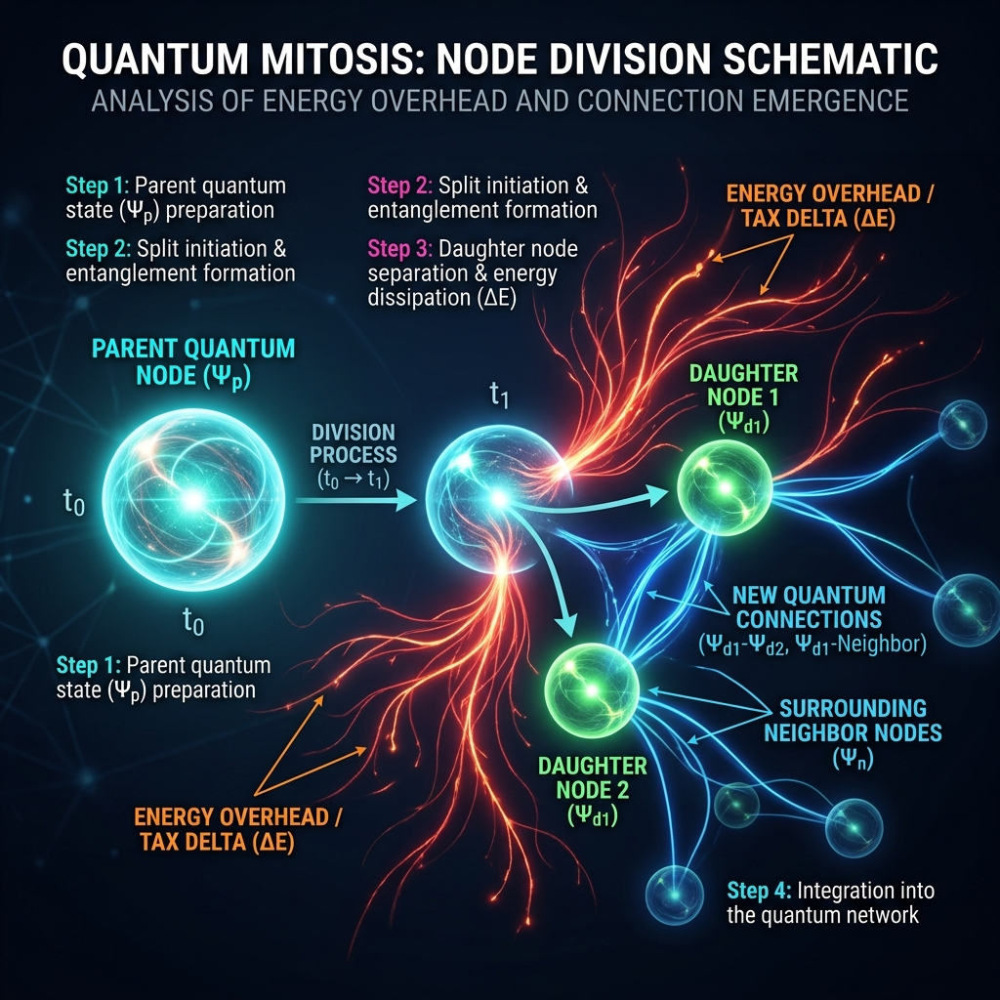
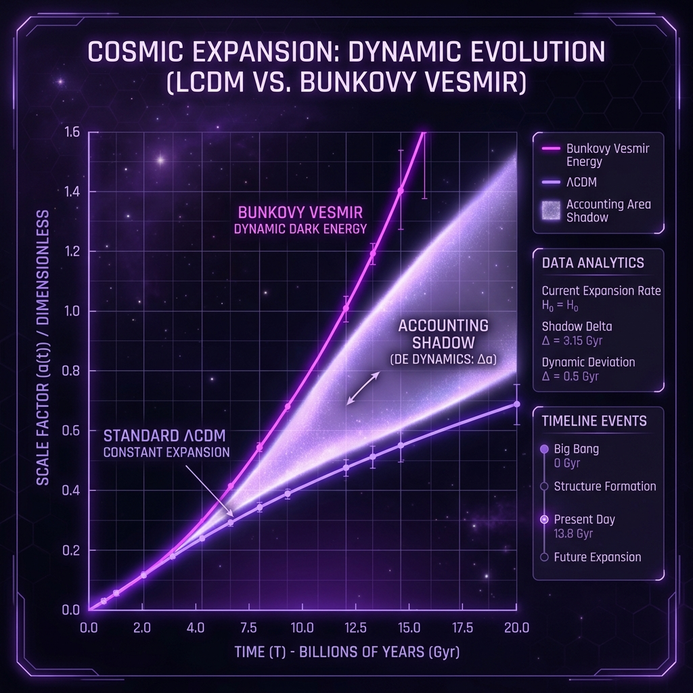
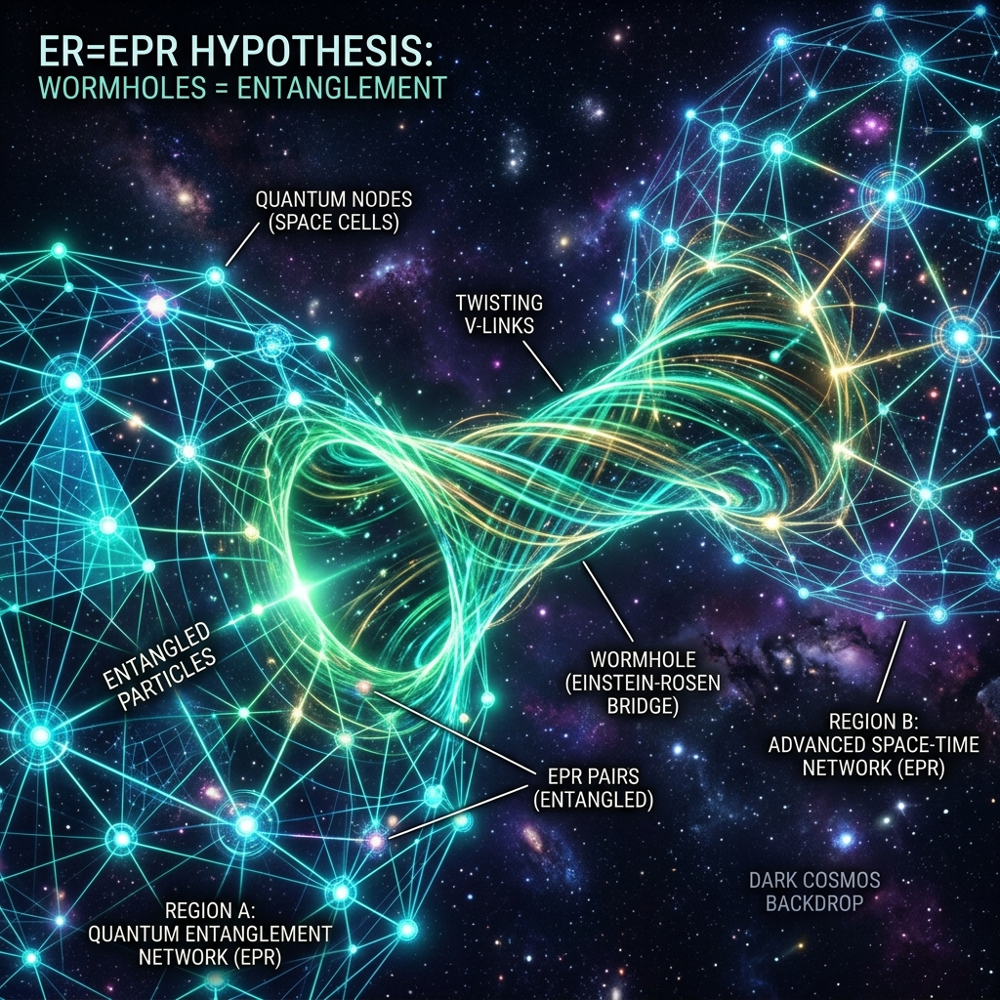

Vesmír ako rastúce tkanivo
Ucelený úvod do základných princípov a metafor teórie, prepájajúci diskrétnu geometriu s našou pozorovanou realitou.
Päť pilierov metabolizmu priestoru
Priestor nie je prázdno, ale dynamická bunková sieť. Každá bunka priestoru funguje ako biologická bunka s vlastným metabolizmom:
- 1. Bunka vákua: Základná jednotka na Planckovej škále ($10^{-35}$ m). Má povrch (pozorovateľný vesmír) a vnútro (kvantové prepojenie).
- 2. Palivo (Vákuová potrava): Hustota energie vákua, ktorú bunky neustále absorbujú.
- 3. Delenie (Mitóza bunky): Keď bunka strávi dosť paliva, rozdelí sa. Delenie buniek priestoru je to, čo vnímame ako expanziu vesmíru.
- 4. Daň z delenia (Réžia δ): Prestavba väzieb pri delení stojí energiu (daň $\delta \approx 2.3\,\%$).
- 5. Účtovný tieň (Tmavá energia): Keďže predpokladáme stuhnuté množstvo hmoty, premena paliva na hmotu sa javí ako odpudivá tmavá energia.
Umelecká vizualizácia Planckovej bunkovej siete. Uzly predstavujú bunky a čiary ich povrchové väzby tvoriace náhodnú Delaunayovu penu.
Filozofický základ (Princípy F1–F5)
F1 & F2 — Realita a vnútro
Realita vzniká na povrchu bunky interakciou. Vnútra buniek nie sú priamo pozorovateľné, ale sú reálne — prenášajú kvantový entanglement.
F3 & F4 — Meranie a účel
Meranie je nezvratná jazva v sieti. Vesmír nemá vopred daný účel, komplexnosť a život sú vedľajším produktom defektov (odpadu) pri raste.
F5 — Žiadny obed zadarmo
Základný termodynamický princíp. Každá prestavba siete stojí disipáciu ($\delta > 0$), čo generuje tmavú energiu, nízke $H_0$ a sklon $n_s$.
Referencie v teórii:
01_Philosophy: Filozofické princípy (Kap. 5)Matematická stavba modelu
Od diskrétnej topológie náhodných grafov až po hydrodynamické transportné rovnice expanzie.
Diskrétna mikrofyzika (Geometria a Disperzia)
<k> = 48π² / 35 + 2 ≈ 15.54
Odvedené zo stereológie 3D Poisson-Delaunayovej triangulácie. Definuje priemerný počet povrchových stien bunky.
Ref: 04_Main_Document: Sekcia A1δ = 1 / (<k> + C) = 0.02297
Koeficient disipácie energie. Prestavba väzieb (povrchové susedstvo $\langle k\rangle$ + vnútorné prepojenia $C=28$) zožerie $2.3\,\%$ energie.
Ref: 04_Main_Document: Sekcia A2, A3ω²(k) = (2/N) Σ [ 1 - cos(k • δ_i) ]
Variačný odhad frekvencie vĺn na grafe. Nepárne disperzné členy sú zakázané symetriou parity, čo chráni Lorentzovu symetriu.
Ref: 04_Main_Document: Sekcia A5, A6
Schéma delenia (mitózy) bunky priestoru. Červeno/oranžové toky predstavujú disipačnú réžiu $\delta$, ktorá vyteká pri tvorbe nových susedských hrán.
Makroskopická kozmológia (Rovnice pozadia V1 a V2)
Rovnice kontinuity V1
Popisujú premenu paliva vákua na hmotu pri expanzii:
dΩ_f/dx = -3δΩ_f - λ(H_0/H)Ω_f
dΩ_m/dx = -3Ω_m + λ(H_0/H)Ω_f
Člen $\lambda(H_0/H)$ vyjadruje, že bunky trávia palivo podľa svojho lokálneho (Planckovho) času nezávisle od expanzie vesmíru.
Ref: 04_Main_Document: Sekcia A7Tvar účtovného tieňa V2
Efektívny tlak a hustota zdanlivej tmavej energie v prepočte ΛCDM fitera:
ρ_DE,eff(x) = E² - Ω_m0 • e^-3x - Ω_r0 • e^-4x
w_eff = -1 - (1/3) d ln ρ_DE,eff / dx
Keďže fitter predpokladá konštantné množstvo hmoty, prírastok hmoty z V1 sa javí ako tieň $w_{\text{eff}} < -1$ v minulosti.
Ref: 04_Main_Document: Sekcia A8Predikcie a konfrontácia s ΛCDM
Prehľad všetkých 11 registrovaných predikcií a detailné vysvetlenie fyzikálnych rozchodov so štandardným modelom kozmológie.
Interaktívny prehľad predikcií
| Veličina | Bunkový model | ΛCDM / Štandard | Rozhodne |
|---|---|---|---|
| N_eff | 3.09 – 3.10 | 3.045 | CMB-S4 (~2029) |
| n_s | 0.9656 ± 0.0016 | fitovaný (0.965) | CMB-S4 (σ=0.002) |
| r | < 10⁻¹⁰ | r ~ 10⁻³ až 10⁻² | LiteBIRD (~2032+) |
| H_0 | 66.4 km/s/Mpc | ~67.4 vs ~73 | systematika rebríka |
| S_8 | 0.811 (0.875 bez trenia) | KiDS: 0.815±0.019 | Euclid (2026-30) |
| w_0, w_a | [-0.93, -0.5] | [-1.0, 0.0] | DESI finále (26-27) |

Vývoj tmavej energie. Žiariaca tieňová zložka (purpurová) ukazuje rozdiel medzi skutočnou metabolickou expanziou a fiktívnym chovaním Λ v ΛCDM.
Interaktívny simulátor a kalkulátor predikcií
Zmeňte vlastnosti siete a sledujte, ako sa okamžite zmenia odvodené hodnoty spektrálneho indexu $n_s$ a disipačného faktora $\delta$:
Interaktívne simulácie siete
Spustite simulácie priamo v prehliadači a sledujte správanie vĺn a konvergenciu prepojení.
Simulácia 1: BFS šírenie na náhodnom grafe
Vizualizácia emergentného ostrého kužeľa rýchlosti svetla. Sledujte, ako sa sublineárny rast šírky frontu ($\sigma(R) \propto R^\chi$) stará o zaostrenie lúča.
Zdrojový skript:
06_script_Q14_light_cone_front_sharpening.pySimulácia 2: Konvergencia V-spojení (Pravidlo vena)
Vizualizácia konvergencie vnútorných prepojení k stabilnému atraktoru $n_V = C = 28$ na základe monogamického pravidla polovičného vena.
Zdrojový skript:
10_script_Q10_Vlinks_dowry_rule.pyKvantové previazanie cez V-spojenia
Tento diagram reprezentuje myšlienkovú líniu ER=EPR. Dve vzdialené makroskopické oblasti na povrchu siete zdieľajú prepojenie cez skryté vnútra buniek (červije diery na Planckovej škále).
Pravidlo vena zaručuje, že prepojenie je v stave saturácie a plne rešpektuje no-communication vety kvantovej mechaniky.
Filozofická a matematická obrana:
01_Philosophy: Druhá sieť (Kap. 4) 04_Main_Document: Pravidlo polovičného vena (A15)
Aktuálny stav a výskumný program
Evidencia stien, otvorených otázok a plánov teoretického rozvoja pre verziu v3.18.
Otvorené výskumné otázky a steny
Q11e: Odvodenie T ∝ H
Kľúčová jednobodová výzva. Teórii chýba detailné odvodenie rovnosti teplôt na horizonte zamrznutia z mikrodynamiky vnútornej vrstvy.
Q16b: Božónové sýtenie
Nájsť dynamický dôvod, prečo vnútornú kapacitu sýtia bozónové nosiče a ignoruje sa fermiónový náklad.
W5: Mikrofyzika nukleácie
Chýba lagranžovský popis vzniku konkrétnych kvantových čísel hmoty a stability protónu z defektov sieci pri delení.
Register otázok a pravidiel:
05_Methodology: Register otázok Q1-Q16 otazky_a_navrh_krokov_v3.18.md (Otázky v3.18)Súd nad 20 mŕtvymi vetvami (Cintorín teórie)
V súlade s metodickými pravidlami projektu sa neúspešné hypotézy nezmazávajú, ale registrujú do cintorína s presným dôvodom popravy:
Mŕtva cesta #11: Kocková mriežka
Modelovanie priestoru mriežkou bolo popravené. Disperzný vzťah vlnenia na mriežke vykazoval 21-krát horšiu smerovú anizotropiu než na náhodnom grafe.
Mŕtva cesta #15: Neskorá tvorba tmavej hmoty pre H0
Pokus zachrániť Hubbleovo napätie neskorou tvorbou tmavej hmoty zlyhal na zlom znamienku expanznej brzdy.